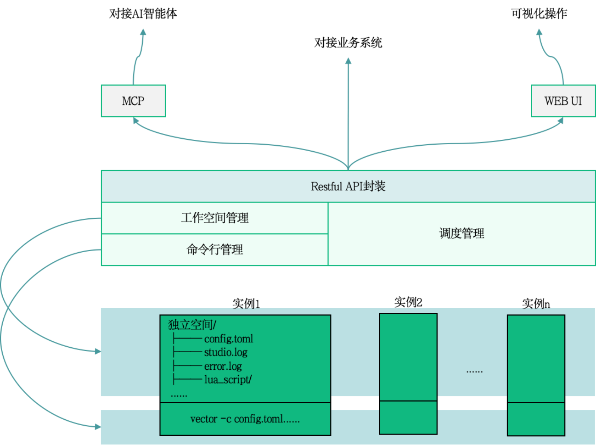

项目核心定位
Vectum 是一款基于 Vector 封装的轻量级数据管道管理工具，面向运维/DevOps 团队，提供可视化界面 + RESTful API + MCP 协议三位一体能力，用于统一管理、调度、监控多实例 Vector 数据采集任务，支持日志、指标、安全审计数据的全链路采集、转换与转发。
当前行业痛点
🔧 纯命令行操作，运维门槛高
Vector 原生采用 YAML 配置文件和命令行操作方式，参数众多、语法复杂，运维人员需要记忆大量命令和配置规则，学习成本高、误操作风险大。
📊 多实例管理困难
当需要运行多个数据采集任务时，每个任务需要独立进程、独立配置，进程管理、资源分配、日志汇总都变得复杂，难以实现统一管控。
🤖 配置编写成本高
Vector 的配置语法虽然强大但相对复杂，从零编写符合业务需求的配置需要深入理解各个组件的参数含义和组合方式。
📈 无统一监控与日志入口
原生 Vector 缺乏可视化的监控面板，无法直观查看任务运行状态、资源占用和日志输出，排查问题需要登录服务器手动查看。
核心解决思路
核心思想：一个平台、三位一体、多实例管理、零门槛运维
预期实现效果
标准化 API 集成
提供完整的 RESTful API，可与现有运维平台、监控系统、告警系统无缝集成，实现自动化运维。
实时可视化监控
统一监控面板实时查看任务状态、进程信息、资源占用，日志实时流查看，异常告警快速响应。
AI 智能配置
通过 MCP 协议对接 AI 智能体，自然语言描述需求即可生成符合规范的 Vector 配置，一键部署上线。
技术架构

1️⃣ 底层：实例运行层
每个实例拥有独立文件隔离空间（配置、日志、脚本），通过命令行指令启动，支持多实例并行运行。
2️⃣ 中间层：平台核心管理层
工作空间管理：实例独立空间生命周期管理
命令行管理：封装底层命令行操作
调度管理：任务调度、资源分配、状态监控
RESTful API 封装：标准化 HTTP 接口
3️⃣ 上层：接入层
业务系统对接：通过 API 集成
AI 智能体对接：通过 MCP 协议
可视化操作：Web UI 界面
技术栈
🚀 技术选型
语言：Java 17
框架：Spring Boot 3.2.0
API 文档：SpringDoc OpenAPI 2.3.0
MCP 协议： spring-boot-mcp-starter
前端页面：低代码平台 AMIS
数据管道：Vector 0.35+
版本规划路线图
V1.0 API接口版
规划中
- 创建任务：创建新的数据推送任务
- 删除任务：根据 ID 删除单个任务
- 批量删除：批量删除多个任务
- 更新任务：根据 ID 更新任务信息
- 批量更新：批量更新多个任务
- 查询所有：获取所有任务列表
- 查询详情：根据 ID 查询任务详情
- 启停控制：切换任务运行状态
- 获取日志：获取任务日志内容
V1.1 可视化操作版
待开启
- 表格展示任务列表：包括任务名称、描述信息、任务配置、状态、进程、更新和创建时间等
- 创建任务：表单提交，包含名称、描述、配置编辑器
- 编辑任务：表单修改，支持修改所有字段
- 启动/停止：根据状态显示启动/停止按钮，确认后操作
- 可查看任务日志：分控制台日志和系统日志分别显示
V1.2 MCP服务版
待开启
- 基于API接口封装MCP服务
- 支持对接AI Agent应用
招募角色
全栈工程师
负责 Vectum 全栈开发，包括后端 API、前端可视化界面
- 熟悉 Java/Spring Boot 后端技术栈
- 精通 JavaScript/TypeScript，熟悉 Vue.js/React 前端框架
- 有进程管理或服务编排经验优先
- 了解 Vector 数据管道优先
- 具备良好的代码规范和架构思维
项目收益
- 🚀 参与前沿数据管道技术研发
- 🏆 获得社区版产品署名权
- 💰 优秀贡献者有机会获得商业化收益分成
- 📚 积累高质量项目经验和作品集
- 🤝 拓展行业人脉和技术视野
项目进度
目前项目处于V1.0版本开发阶段，已完成技术方案设计和核心架构搭建。
预计完成时间：2026年9月
申请方式
请将您的简历和相关作品发送至邮箱：coolxer@163.com
邮件主题请注明：【Vectum项目申请】+ 姓名 + 应聘岗位
我们将在收到申请后一周内与您联系